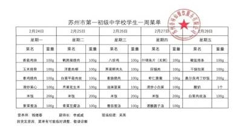

惠阴校园——“周恩来”报社
争做新时代好少年，书写惠阴美好篇章
校园 U 盘风波：学生“惊险操作”引发关注
近日，一场发生在信息课后的 U 盘“风波”，吸引了师生们的关注。
课间，李军昊同学未经吴鸣老师许可，试图将其 U 盘中的内容复制到自己的 U 盘中，这一行为被信息老师敏锐察觉。同在此事中有参与的李驭昊同学见势不妙，急忙拔出 U 盘，却依旧没能逃过老师的眼睛。关键时刻，李军昊选择“弃车保帅”，保住了存有复制内容的 U 盘。
信息老师为彻查此事，询问信息课代表班上还有谁携带了 U 盘，课代表如实说出李军昊。被发现后，信息老师要求李军昊打开 U 盘检查，以证清白。就在信息老师短暂走神之际，李军昊迅速打开《西游记》的 PPT，巧妙伪装。老师查看时，未发现异常内容，李军昊就此 “创造奇迹”，成功躲过检查。此事在校园内引发热议，部分同学对李军昊的“机智”表示惊讶，也有同学认为这种未经允许复制他人资料的行为并不恰当。学校方面表示，将加强对学生的信息道德和行为规范教育，避免类似事件再次发生。
教室墙洞变“艺术” 引发校园热议
近日，一间普通教室里出现了一个奇特现象，教室墙上的破洞不仅没有被修补，反而越来越大，更令人惊讶的是，美术老师竟然称其为艺术。这一事件迅速在校园内引发了广泛关注和讨论。
据了解，这个破洞最初只是一个小小的裂缝，随着时间的推移逐渐变大。一开始，同学们和老师们都以为学校会及时安排人员进行修补，但没想到，这个破洞却在美术老师的“介入”下，有了不一样的发展。
美术老师偶然注意到这个破洞后，认为它有着独特的形态和表现力，便开始引导学生们从艺术的角度去看待它。他鼓励学生们围绕这个破洞展开创意联想，有的学生在破洞周围绘制了奇幻的场景，仿佛破洞是通往另一个神秘世界的入口；有的学生则利用破洞的形状，添加线条和色彩，将其变成了一幅独特的抽象画。艺术不仅限于画作雕塑，生活意外亦是其灵感。此破洞激发学生创意，领悟艺术无处不在，关键在发现与诠释。
目前，这一事件仍在持续发酵，学校后续将如何处理这个“艺术破洞”，我们将持续关注。
学生生物课后寻蕨类植物，意外拾金不昧传佳话
近日，一堂生物课后实践活动中，发生了一件温暖人心的事情。三名学生在校园周边寻找蕨类植物，为生物课作业收集素材，却意外发现了 5 元钱。
这三名学生是李驭昊、郑子宸和李军昊。当天，他们按照老师的指导，在校园附近的一处绿地仔细寻找蕨类
植物，认真观察植物的形态 元钱数额巨大，但拾金不昧特征，准备将其作为生物课 是每个人都应该遵守的道作业的素材。就在这时，在 德准则，失主发现钱丢了肯草丛中发现了一个小纸团， 定会着急。
打开一看，竟然是 5 元钱。
教务处老师收到钱后，对三短暂的惊讶后，三名学生没 名学生拾金不昧的行为给有丝毫犹豫，经过简单商量， 予了高度赞扬，并表示学校一致决定将钱上交给学校 会尽快寻找失主。同时，学教务处。他们表示，虽然 5 校也计划在全校范围内对这三名同学的优秀品德进行表扬，以此鼓励更多学生传承和发扬拾金不昧的传统美德。
此次事件虽小，却照亮校园，显学生美德。这样的故事将激励更多学子向上向善。

周一多云 2-6℃ 主创团队： 李军昊 侯天佑周二 阴 4-8℃ 吴铭 孙佳铭周三小雨 6-14℃ 特别鸣谢 李驭昊 郑子宸周四多云 8-18℃ 排版编辑：孙佳铭 李军昊周五 阴 9-21℃ 吴铭
|
在《学生生物课后一、单项选择题 寻蕨类植物，意外拾金不昧传佳话》里，三名学生发现 的钱是（ ）在《校园 U 盘风波：学生 A “惊险操作”引发关注》中， . 10 元 B. 20 元 C. 5 李军昊为躲避老师检查，打 . 15 元元 D 开了（ ）伪装。 A. 课本文件 B. 《西游记》二、简答题 |
中，能看出这三名学生具有怎样的品质？请简要分析。 三、拓展题 假如你是校园小记者，要对《校园 U 盘风波》中的李军昊进行采访，你会问他哪些问题？请写出三个采访问题。 针对《教室墙洞变“艺术”》这一事件，学校准备举办一场主题辩论会，正方观点是 “墙洞变艺术是创新之举”，反方观点是“墙洞就应该修补，不应该被当作艺术”。请选择一方观点，为其写一段辩论词，大约 100 字 。 |
|
|
PPT C. 游戏文件 D. 空白文档 《教室墙洞变“艺术” 引发校园热议》中，美术老师认为破洞能成为艺术是因为 （ ） A. 破洞形状规则 B. 能给学生提供创意机会 C. 破洞颜色独特 D. 学校要求将其变艺术 答案下期公布 |
请简要概括《校园 U 盘风波：学生“惊险操作”引发关注》的主要内容。 结合《教室墙洞变“艺术” 引发校园热议》，谈谈你对美术老师把墙洞视为艺术这一行为的看法。 从《学生生物课后寻蕨类植物，意外拾金不昧传佳话》 |
|
投稿 13145089008 1548449898 13270463238 Caixukun11451489@outlook.com